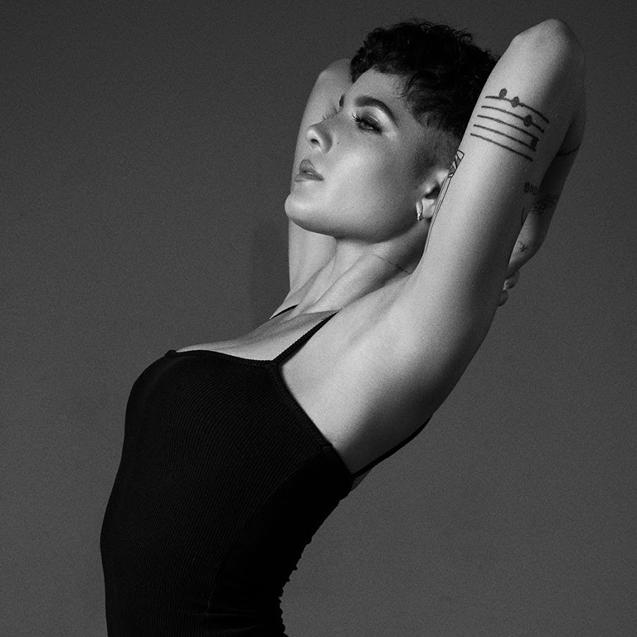

36,697,743 Monthly Listeners

Halsey
About Artist
Halsey is the alias of New York-based pop artist Ashley Frangipane. The New Jersey native took her moniker from a New York L train subway stop, and her adopted city plays a large role in both the sound and lyrics of her dark, gritty electropop, which has been compared to acts like Chvrches and Lorde. Based on the strength of her first single, "Ghost," she signed a deal with Capitol-owned electronic/dance label Astralwerks in early 2014. Her debut EP, Room 93, arrived in October of that same year.
In 2015, Halsey released her debut full-length album, Badlands, which featured production from Lido, the Futuristics, Son Lux, and others. Included on the album were the singles "Ghost," "New Americana," "Colors," and "Castle," a version of which also appeared on the soundtrack to The Huntsman: Winter's War. Badlands debuted at number two on the Billboard 200 chart and sold well, ultimately achieving gold certification status. In January 2017, Halsey returned with the single "Not Afraid Anymore," which was featured on the Fifty Shades Darker soundtrack.
Three months later, she released "Now or Never," the first single from her sophomore album, Hopeless Fountain Kingdom. Featuring collaborations with Sia, Greg Kurstin, and Benny Blanco, the LP appeared in June 2017 and topped the Billboard 200. A remix of the LP's dark pop single "Alone," featuring Big Sean and Stefflon Don, arrived in March 2018. Later that year, she featured on Blanco's solo single "Eastside" alongside singer Khalid. The track became a Hot 100 hit and added to a late-year boost with her features in Teen Titans Go! To the Movies (voicing Wonder Woman) and A Star Is Born. A single, "Without Me," arrived in September. ~ Timothy Monger, Rovi